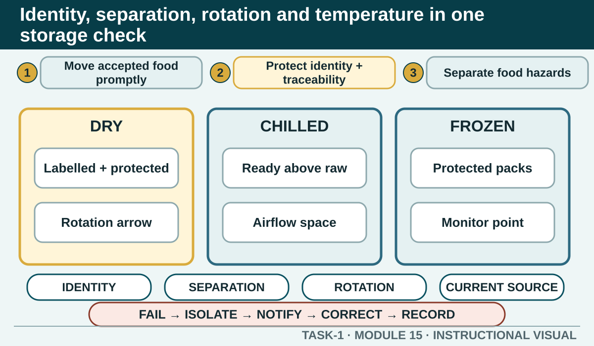

Receive, label, separate, rotate and monitor food in the authorised storage environment, using current temperature controls and honest corrective action without inventing numerical limits.
Learning intention
What success looks like
Links hazard, control, monitoring and corrective action
Keeps failed food out of use
Uses the actual scenario evidence
Does not invent a temperature, date mark or local rejection procedure
Core ideas
Build the complete picture
1
Move accepted food into control promptly
2
Protect identity and traceability
3
Separate food and non-food hazards
4
Rotate stock using the authorised date system
Visual explanation
Identity, separation, rotation and temperature in one storage check

A neutral cross-section of dry, chilled and frozen storage zones shows readable labels, protected containers, raw-to-ready separation, stock rotation arrows, airflow space and a monitoring point. Every failed check exits to Isolate, Notify, Correct and Record.
Worked example
Isolate, correct, report and record
When identity, separation, date, time or temperature control fails, keep the affected item from use and notify the responsible person. Follow the authorised corrective action, which may include rejecting, isolating, moving, adjusting, discarding or further reviewing the food according to the real conditions.
Observed evidence: During a fictional storage check, a learner finds a prepared container beside correctly identified stock, but this container has no reliable label and the current monitoring record cannot be matched to it. Decision and reason: They decide that neither identity nor control history can be verified, so inventing a date, temperature or intended use would create false evidence. Safe action: The learner isolates the container from use, maintains separation and reports its location and condition to the responsible teacher. Result: It remains unavailable while the authorised person determines the disposition. Next check or record: The learner checks nearby labels and records, corrects nothing unless directed, and documents the observed facts, isolation and notification through the authorised system.
Question the room
A delivered food item does not meet the workplace acceptance criteria. What is the strongest response?
Accept it and use it before the other stock.
Place it at the back of storage and decide later.
Keep it from use, follow the authorised reject or isolate procedure, notify the responsible person and record the result.
Apply
Receiving and storage decision trail
The teacher has nominated the current acceptance procedure. Work only from the evidence given in each card and the authorised source linked on the page.
Read the four evidence cards.
Choose an action and read the feedback.
Complete one monitor → failure evidence → corrective action → record chain.
Exit ticket
Action · evidence · next step
Use a teacher-provided receiving or storage scenario. Identify one food-safety hazard, the approved control that should be monitored, the evidence that the control failed and the corrective action and record that should follow.
One action I would take
The evidence I would check
The person or source I would confirm with
My next improvement
1 of 8
Speaker notes and delivery prompts
Open with this purpose: Receive, label, separate, rotate and monitor food in the authorised storage environment, using current temperature controls and honest corrective action without inventing numerical limits.
Use Move accepted food into control promptly to connect prior learning to the first observable workplace decision.
Model Isolate, correct, report and record by walking through this supplied example: Observed evidence: During a fictional storage check, a learner finds a prepared container beside correctly identified stock, but this container has no reliable label and the current monitoring record cannot be matched to it. Decision and reason: They decide that neither identity nor control history can be verified, so inventing a date, temperature or intended use would create false evidence. Safe action: The learner isolates the container from use, maintains separation and reports its location and condition to the responsible teacher. Result: It remains unavailable while the authorised person determines the disposition. Next check or record: The learner checks nearby labels and records, corrects nothing unless directed, and documents the observed facts, isolation and notification through the authorised system.
Ask: A delivered food item does not meet the workplace acceptance criteria. What is the strongest response? Confirm the strongest response as Keep it from use, follow the authorised reject or isolate procedure, notify the responsible person and record the result..
Listen for this misconception: Using it quickly does not restore a failed receiving control or establish that it is safe.
Move into Receiving and storage decision trail, then collect the saved response and finish with the source boundary: Authorised source note: Source basis: authorised HACCP student activity and Cycle 1 food-safety learning, supported by current NSW Food Authority guidance. Numerical limits, acceptance specifications and local corrective-action records remain Teacher to confirm.